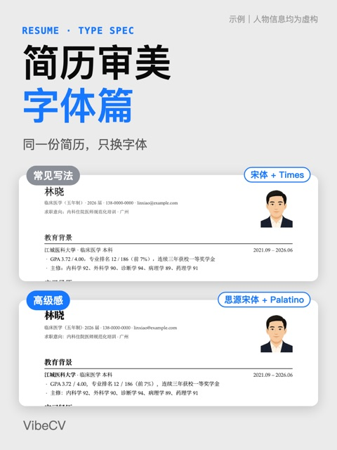
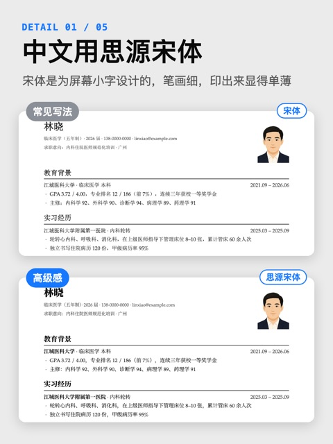
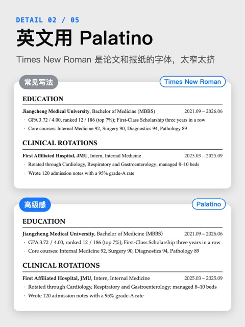
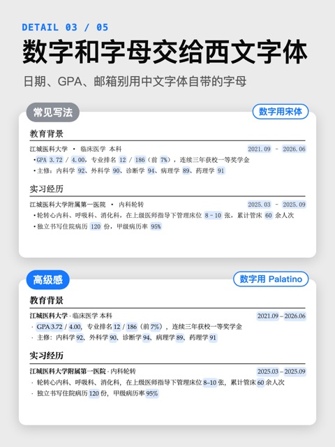
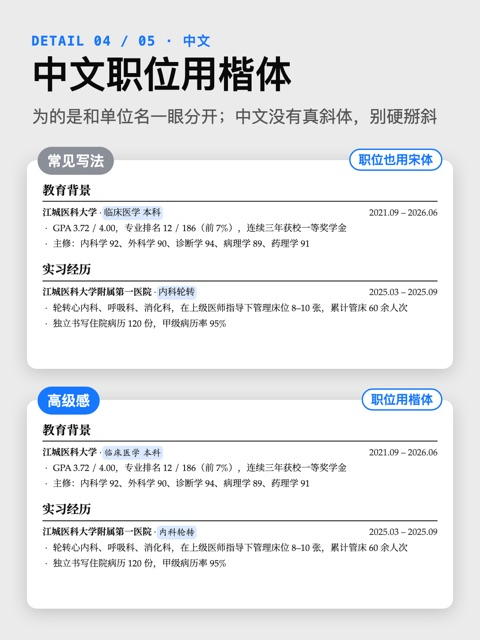
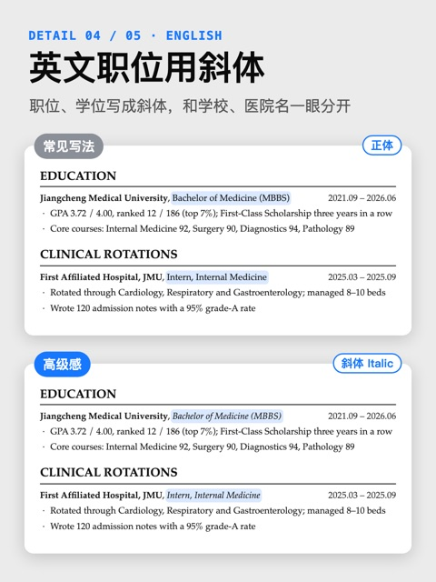
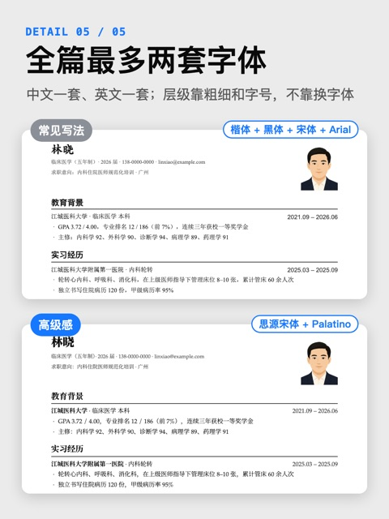
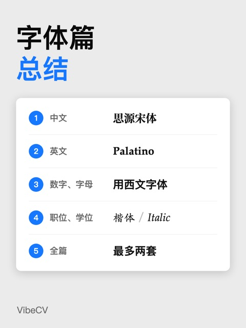

这篇不是搜索汇总，而是一篇值得单独归档的实操笔记：作者 continus 用 8 张对比图演示了简历字体 怎么选。527 赞 / 660 藏的收藏比说明它的实用度。核心结论只有五条。
壹字体五原则
- 中文用思源宋体：宋体是为屏幕上的小字设计的，笔画细，印出来显得单薄。思源宋体免费、可商用，粗细齐全。
- 英文用 Palatino：Times New Roman 是 1931 年给《泰晤士报》设计的，为了省版面做得很窄；Palatino 更舒展，稍有棱角但不浮夸，正式而不乏风格。
- 数字和字母交给西文字体：日期、GPA、邮箱这些简历必备项，尽量不要用中文字体；中文和英文之间可以给个空格。
- 职位、学位做区分度：让职位与前面的公司名/单位名有区分。中文用楷体（中文没有真斜体，别硬掰斜）；英文简历用斜体，如 Bachelor of Medicine、Intern。
- 全篇最多两套字体：中文一套、英文一套。名字楷体、标题黑体、正文宋体，看着就乱；层级靠粗细和字号分。
贰资源与工具
- 思源宋体：Adobe 和 Google Fonts 都能免费下载。
- Palatino：苹果电脑自带；Windows 自带 Palatino Linotype。
- VibeCV：作者做的简历工具，中文默认思源宋体，英文可选 Palatino。
附原帖存档 · 1 篇 · 原图与全文
1好的字体 更能表达对内容的尊重527/660/17
上一篇讲排版，这篇只讲字体。每张图上面是常见写法，下面是改完的样子，内容没动，只换字体。1️⃣ 中文用思源宋体 2️⃣ 英文用 Palatino 3️⃣ 数字和字母交给西文字体 4️⃣ 职位、学位可以做一些区分度 5️⃣ 全篇最多两套字体。思源宋体在 Adobe 和 Google Fonts 都能免费下载；Palatino 苹果电脑自带，Windows 自带 Palatino Linotype。最后一张是总结，收藏起来，下次排简历可以照着检查一下。








图文摘录 · OCR
图 1DETAIL 01 / 05
中文用思源宋体
宋体是为屏幕上的小字设计的，笔画细，印出来显得单薄。思源宋体免费、可商用，粗细齐全。
图 2EDUCATION
Jiangcheng Medical University, Bachelor of Medicine（MBBS）2021.09-2026.06
• GPA 3.72 / 4.00, ranked 12 / 186（top 7%）；First-Class Scholarship three years in a row
• Core courses: Internal Medicine 92, Surgery 90, Diagnostics 94, Pathology 89
图 3DETAIL 02 / 05
英文用 Palatino
Times New Roman 是论文和报纸的字体，太窄太挤
（Times New Roman 常见写法）
EDUCATION
Jiangcheng Medical University, Bachelor of Medicine（MBBS）2021.09-2026.06
• GPA 3.72 / 4.00, ranked 12 / 186（top 7%）；First-Class Scholarship three years in a row
• Core courses: Internal Medicine 92, Surgery 90, Diagnostics 94, Pathology 89
CLINICAL ROTATIONS
First Affiliated Hospital, JMU, Intern, …
图 4DETAIL 03 / 05
数字和字母交给西文字体
日期、GPA、邮箱这些简历里几乎必备的东西，尽量不要用中文字体，一般给西文字体能呈现得更好。
小技巧：中文和英文之间可以给个空格。
图 5DETAIL 04 / 05
职位、学位可以做一些区分度
目的是让职位和前面的公司名/单位名之间能够有区分度。
中文用楷体（中文没有真斜体，别硬掰斜）；英文简历用斜体，比如 Bachelor of Medicine、Intern。
图 6DETAIL 05 / 05
全篇最多两套字体
中文一套、英文一套，最多就这两套。
名字用楷体、标题用黑体、正文用宋体，看着就乱；层级靠粗细和字号分。
图 7字体资源
思源宋体在 Adobe 和 Google Fonts 都能免费下载；
Palatino 苹果电脑自带已经有了，Windows 自带 Palatino Linotype。
图 8字体篇
总结
① 中文思源宋体
② 英文 Palatino
③ 数字、字母用西文字体
④ 职位、学位楷体 / Italic
全篇最多两套
VibeCV